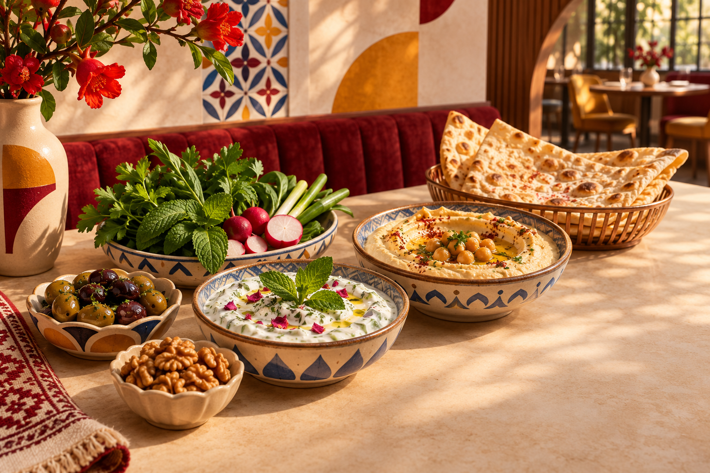
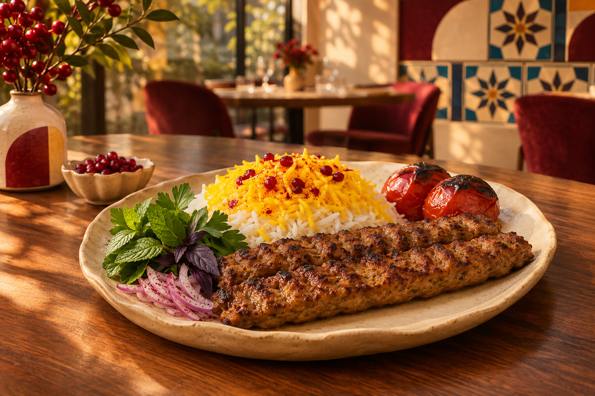
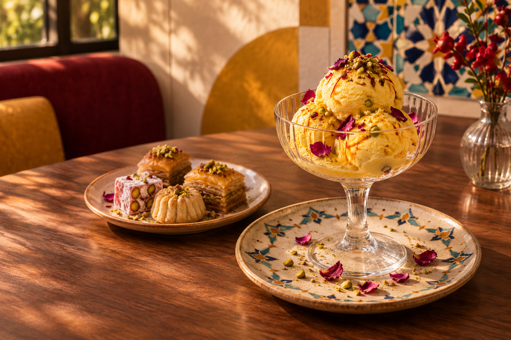

Menu
Appetizers

-
Kuku Sabzi
$8.00
A dense, fragrant herb frittata packed with parsley, cilantro, dill, chives, and turmeric - topped with greek yogurt, salt, and pepper.
-
Salad Shirazi
$8.00
A crisp, bright chopped salad combining cucumbers, tomatoes, and red onions dressed with lime juice and dried mint.
-
Mast-o-Khiar
$8.00
A cool, velvety yogurt dip folding in crisp, finely diced cucumbers, infused with fragrant dried mint and a hint of garlic.
-
Dolmeh (Barg-e Mo)
$8.00
4 Grape leaves stuffed with a savory mixture of long-grain rice, fresh herbs, onions, and lemon.
-
Mirza Ghasemi
$8.00
A smoky Caspian Sea region dish made from charcoal-grilled eggplants, tomatoes, garlic, and lightly set eggs.
Entrees

-
Kebab
$16.00
Your choice of two skewers of koobideh (ground beef/lamb), jujeh (marinated and grilled chicken), or bargh (thinly sliced filet mignon), served with rice and grilled tomatoes.
-
Rice
$16.00
Your choice of zereshk polo (sweet rice with raisins) or baghali polo (dill rice with peas) - tahdig included!
-
Khoresht (stew)
$16.00
Your choice of ghorme sabzi (savory slow-cooked herb stew with kidney beans, lamb, and dried limes) or khoresht-e-bademjan (aromatic tomato-based eggplant stew simmered with beef)
-
Abgoosht
$16.00
Lamb, chickpea, white bean, potatoe, and tomatoe soup slow-cooked in a clay pot.
-
Kotlet
$16.00
pan-fried meat and potato patties that are crispy on the outside and juicy on the inside.
Desserts

-
Bastani Sonati
$10.00
A rich saffron and rosewater ice cream embedded with crunchy frozen clotted cream chunks and pistachios
-
Baghlava (Persian Baklava)
$10.00
Flaky layers of pastry filled with crushed almonds and walnuts, distinctively drier and less syrupy than Mediterranean variations, infused with rosewater and cardamom
-
Faloodeh
$10.00
A refreshing frozen dessert from Shiraz made with thin starch-vermicelli noodles in a semi-frozen rosewater and sugar syrup, served with a squeeze of fresh lime juice.
-
Sholeh Zard
$10.00
A golden-yellow ceremonial saffron rice pudding scented with rosewater and cardamom, and garnished with cinnamon and slivered pistachios.
-
Gaz
$10.00
A traditional Isfahani nougat confection made with sugar, egg whites, rosewater, pistachios, and the sap of wild desert tamarisks.